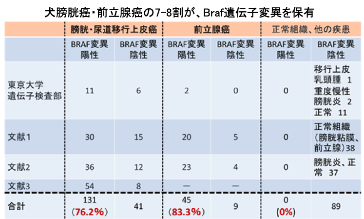
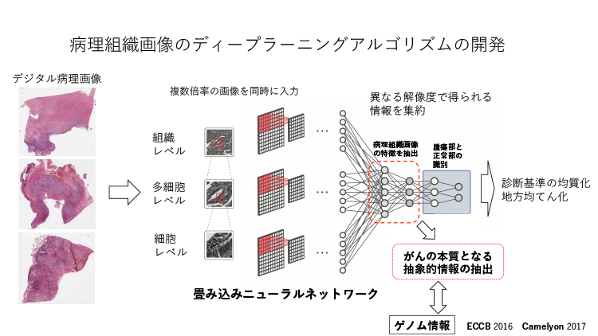

腫瘍班
- 獣医腫瘍研究ツールの開発
- 臨床サンプルの解析
- 免疫・炎症・血管新生の腫瘍進展への関連の解析
- 腫瘍の転移機構の解明
- 基礎研究で得られた結果に基づいた臨床応用(トランスレーショナルリサーチ)
実験環境で生育可能な腫瘍細胞株は、腫瘍細胞の分子背景の解析や新しい治療法の開発に必須のツールです。腫瘍細胞株の様々な薬剤を添加した際や遺伝子の発現を調整した際の反応性を検証したり、腫瘍細胞株移植マウスへ薬剤を投与した際の効果を検証したりすることで、臨床症例の解析のみでは得られない貴重な情報を得ることができます。 これまでに、たくさんのヒトやマウスの腫瘍細胞株が樹立され、多くの研究成果を挙げてきました。しかし、犬猫の腫瘍細胞株はその種類や数が少なく、獣医学領域における腫瘍研究の制約の一つになってきました。私達は、犬猫の腫瘍研究において必須である犬猫の腫瘍細胞株を樹立し、それらを利用した研究を進めてきました。さらに、それらの細胞株は私達の研究室のみでなく、世界中の研究機関に分与され、犬猫の腫瘍研究に貢献しています。
【研究室で樹立してきた細胞株】
犬乳腺癌細胞株（CHMp, CHMm, CIPp, CIPm, CNMp, CNMm, CTBp, CTBm）
犬乳腺癌高悪性度クローン細胞株CHMp-5b, 同低悪性度クローン株CHMp-13a
猫乳腺癌細胞株（FMCp1, FMCp2, FMCm, FKNp, FNNm, FONp, FONm, FYMp）
犬悪性黒色腫細胞株（CMeC1, CMeC2, CMM1, CMM2, KMeC, LMeC）
犬骨肉腫細胞株（CHOS, HOS, OOS, POS, HMPOS）
犬肥満細胞腫細胞株（CM-MC, CoMS, VI-MC）
犬膀胱癌細胞株(Sora, Love, TCCUB, Nene)
犬肺腺癌細胞株(Gen)
犬消化管間質腫瘍(13020)
犬腎芽腫(Peace, 12041)
【関連業績抜粋】
・ Anti-tumor effects of the histone deacetylase inhibitor vorinostat on canine urothelial carcinoma cells. Eto, S., Saeki, K*., Yoshitake, R., Yoshimoto, S., Shinada, M., Ikeda, N., Kamoto, S., Tanaka, Y., Kato, D., Maeda, S., Tsuboi, M., Chambers, J., Uchida, K., Nishimura, R., Nakagawa, T. PLoS One. 2019. Jun; 14(6): e0218382.
・ Molecular investigation of the direct anti-tumour effects of nonsteroidal anti-inflammatory drugs in a panel of canine cancer cell lines. Yoshitake R, Saeki K, Watanabe M, Nakaoka N, Ong SM, Hanafusa M, Choisunirachon N, Fujita N, Nishimura R, Nakagawa T*. Vet J. 2017 221 38-47
・ Phenotypic screening of a library of compounds against metastatic and non-metastatic clones of a canine mammary gland tumour cell line. Saeki, K., Watanabe, M., Michishita, M., Tsuboi, M., Sugano, S., Yoshitake, R., Murai, K., Tanaka, Y., Ong, S.M., Saito, T., Matsumoto, K., Fujita, N., Nishimura, R., Nakagawa, T*. Vet. J. 205:288-296, 2015. (Award of Andrew Higgins Prize of Veterinary Journal)
・ Effects of transplantation sites on tumor growth, pulmonary metastasis and ezrin expression of canine osteosarcoma cell lines in nude mice. Jaroensong T, Endo Y, Lee SJ, Kamida A, Mochizuki M, Nishimura R, Sasaki N and Nakagawa T. Vet. Comp. Oncol. 10:274-282, 2012
・ Establishment of a pair of novel cloned tumour cell lines with or without metastatic potential from canine mammary adenocarcinoma. Murai, K., Nakagawa, T., Endo, Y., Kamida, A., Yoshida, K., Mochizuki, M., Nishimura, R., Sasaki,N. Res. Vet. Sci. 93:468-472, 2012
【これら細胞株を用いた他施設での研究成果抜粋】
・ CCR4 Blockade Depletes Regulatory T cells and Prolongs Survival in a Canine Model of Bladder Cancer. Maeda S, Murakami K, Inoue A, Yonezawa T, Matsuki N. Cancer. Immunol. Res. 2019; 7(7):1175-1187
・ Anti-tumour effect of lapatinib in canine transitional cell carcinoma cell lines. Sakai K, Maeda S, Saeki K, Nakagawa T, Murakami M, Endo Y, Yonezawa T, Kadosawa T, Mori T, Nishimura R, Matsuki N. Vet. Comp. Oncol. 2018 16(4):642-649
・ Anti-tumor effect of bevacizumab on a xenograft model of feline mammary carcinoma. Michishita, M., Ohtsuka, A., Nakahira, R., Tajima, T., Nakagawa, T., Sasaki, N., Arai, T., Takahashi, K. J. Vet. Med. Sci. 78:685-689, 2016.
・ DNA methylation contributes to silencing of anti-oncogenic microRNA-203 in human and canine melanoma cells. Noguchi, S., Mori, T., Nakagawa, T., Itamoto, K., Haraguchi, T., Mizuno, T. Melanoma Res. 25:390-398, 2015.
・ Gene electrotransfer of canine interleukin 12 into canine melanoma cell lines. Lampreht, U., Kamensek, U., Stimac, M., Sersa, G., Tozon, N., Bosnjak, M., Brozic, A., de Sá Oliveira, G.G., Nakagawa, T., Saeki, K., Cemazar, M. J. Membr. Biol. 248:909-917, 2015.
犬猫の腫瘍の病態解明や治療標的の同定を目的に様々な手法を用いた解析を進めています。例えば、犬乳癌細胞株を用いた網羅的遺伝子発現解析では、炎症に関わるNF-kBシグナルの異常を同定し、治療法の開発に取り組んできました。犬膀胱癌細胞株を用いた300種以上の阻害薬ライブラリーによる解析では、増殖シグナルの異常や抗腫瘍免疫抑制分子制御機構、代謝異常、エピジェネティック異常【図】などを同定するに至り、現在詳細な解析を進めています。さらに、様々な腫瘍種を対象として、遺伝子発現解析と免疫染色解析を組み合わせることで、HERファミリーやグリピカンファミリー、ポドプラニンの異常発現を発見し、病態を解明するとともにそれらを標的とした治療法の開発に取り組んでいます。 犬猫の腫瘍の早期診断を目的にリキッドバイオプシーを利用した診断法の確立にも取り組んでいます。他大学や企業と共同で、血液検体中のマイクロRNA(miRNA)や微量元素の解析を行い、腫瘍罹患犬特異的なマーカーの探索に取り組んでいます。近年の成果として、犬膀胱癌症例の尿検体を用いて腫瘍細胞が保有するBraf遺伝子変異の有無を簡便かつ高精度で特定できる検査系(Digital PCR法)を確立し、共同研究企業共に上市し、多くの獣医師が知る検査系として普及しています【図】(株サンリツセルコバ BRAF遺伝子検査[関連リンクはこちら]

【関連業績抜粋】
・ Evaluation of immunohistochemical staining with PMab-38, an anti-dog podoplanin monoclonal antibody, in various canine tumor tissues. Kiname K, Yoshimoto S, Kato D*, Tsuboi M, Tanaka Y, Yoshitake R, Eto S, Shinada M, Chambers J, Saeki K, Kinoshita R, Yamada S, Uchida K, K. Kaneko M, Nishimura R, Kato Y, Nakagawa T. Jpn. J. Vet. Res. 2019
・ Detection of HER2 overexpression in canine anal sac gland carcinoma. Yoshimoto S, Kato D*, Kamoto S, Yamamoto K, Tsuboi M, Shinada M, Ikeda N, Tanaka Y, Yoshitake R, Eto S, Saeki K, Chambers J, Kinoshita R, Uchida K, Nishimura R, Nakagawa T. J. Vet. Med. Sci. 2019. Jul; 81(7): 1034-1039.
・ Anti-tumor effects of the histone deacetylase inhibitor vorinostat on canine urothelial carcinoma cells. Eto S, Saeki K*, Yoshitake R, Yoshimoto S, Shinada M, Ikeda N, Kamoto S, Tanaka Y, Kato D, Maeda S, Tsuboi M, Chambers J, Uchida K, Nishimura R, Nakagawa T. PLoS One. 2019. Jun; 14(6): e0218382.
・ Immunohistochemical evaluation of HER2 expression in canine thyroid carcinoma. Yoshimoto S, Kato D*, Kamoto S, Yamamoto K, Tsuboi M, Shinada M, Ikeda N, Tanaka Y, Yoshitake R, Eto S, Saeki K, Chambers J, Kinoshita R, Uchida K, Nishimura R, Nakagawa T. Heliyon. 2019. Jul; 5(7):e02004
・ Anti-tumour effect of metformin in canine mammary gland tumour cells. Saeki, K., Watanabe, M., Tsuboi, M., Sugano, S., Yoshitake, R., Tanaka, Y., Ong, S.M., Saito, T., Matsumoto, K., Fujita, N., Nishimura, R., Nakagawa T*. Vet. J. 205:297-304, 2015.
私達は臨床検体の解析を通して、症例犬の抗腫瘍免疫応答や炎症により促進される血管新生・上皮間葉転換(転移や治療抵抗性に関与)が症例の予後を規定する重要な因子であることを明らかにしてきました。それらの知見に基づき、現在は免疫・炎症・血管新生を標的とした犬腫瘍の病態解明や治療法の開発に取り組んでいます。 腫瘍症例では、体内の免疫細胞が悪性腫瘍を「敵」として認識し攻撃する機構、いわゆる抗腫瘍免疫が働いていることがわかっています。私達の研究においても腫瘍組織内に浸潤している腫瘍浸潤リンパ球と症例犬の予後の関連がわかってきました。そこで、生体の免疫細胞を利用した様々な免疫療法の開発に取り組んできました。そのための戦略として、免疫細胞が腫瘍を認識し攻撃できるように、症例の体外で教育・活性化する方法と症例に薬剤を投与し、症例の体内で教育・活性化する2つの方法に取り組んでいます。前者の戦略は、腫瘍内に浸潤し腫瘍を認識できる抗腫瘍T細胞を直接体外で活性化・増幅し投与する治療法(TIL療法)や末梢血由来のT細胞を体外で遺伝子改変により教育し腫瘍を認識できるようにした後に投与する遺伝子改変T細胞療法(CAR-T細胞療法)です【図】。後者の戦略は、NK細胞を教育する抗体を症例に投与する抗体療法や腫瘍細胞由来の抗腫瘍免疫抑制分子を遮断し、抗腫瘍免疫細胞を体内で活性化する治療法です【図】。
【関連業績】
・ The relationship between clinicopathological features and expression of epithelial and mesenchymal markers in spontaneous canine mammary gland tumors. Yoshida K, Yoshida S, Choisunirachon N, Saito T, Matsumoto K, Saeki K, Mochizuki M, Nishimura R, Sasaki N, Nakagawa T. J. Vet. Med. Sci. 76:1321-1327, 2014
・ Proliferative index and microvessel density as potential prognostic markers of canine oral malignant melanomas. Choisunirachon N, Tanaka Y, Saeki K, Sasaki N, Nishimura R, Nakagawa T*. Thai. J. Vet. Med. 44:435-443, 2014
・ Significance of tumor infiltrating immune cells in spontaneous canine mammary gland tumor: 140 cases. Saeki, K., Endo, Y., Uchida, K., Nishimura, R., Sasaki, N.,Nakagawa, T*. J. Vet. Med. Sci. 74:227-230, 2012
CAR-T細胞療法や抗体療法では、正常細胞では発現せずに、犬の腫瘍細胞で特異的に発現している表面分子(腫瘍抗原)を同定し、それらを標的に開発を進める必要があります。発現している腫瘍抗原の種類や量は腫瘍種によって異なることから、それぞれ腫瘍に対して最適な標的を同定する必要があります。私達はこれまでに、犬の肛門嚢腺癌、肺癌、膀胱癌、甲状腺癌、骨肉腫、乳腺腫瘍、悪性黒色腫において、HERファミリーの分子が高発現していること、扁平上皮癌や悪性黒色腫、膀胱癌を始めとしたいくつかの癌腫でグリピカンファミリー、ポドプラニン分子が高発現していることを同定してきました[東大プレスリリース]。現在、これらを標的としたCAR-T細胞や抗体薬を開発しています。グリピカン1特異的CAR-T細胞はマウスモデルでの有効性と安全性を確認し、現在、犬CAR-T細胞の抗腫瘍効果を検証しています【図】。抗ポドプラニン犬キメラ化抗体は前臨床研究を終え、臨床試験を行っています。さらに、これらの薬剤の治療効果を増強するために、CAR-T細胞のベクターの改良(アメリカ ペンシルバニア大学との共同研究)やCAR-T細胞の生体内での詳細な抗腫瘍機序の解明や併用薬の検証(慶應義塾大学医学部との共同研究)、抗体薬のフコース除去による細胞傷害活性の増強や薬剤付加によるドラッグデリバリー技術を用いた抗腫瘍効果の増強(東北大学医学部との共同研究)など、既存技術を用いた開発にとどまらず、さらなる治療効果増強を目指した挑戦的な研究に取り組んでいます。
【関連業績】
・ Glypican-1 specific CAR-T cells eradicate established solid tumor without adverse effects and synergize with anti-PD-1 antibody therapy. Kato D, Yaguchi T, Iwata T, Katoh Y, Morii K, Tsubota K, Takise Y, Tamiya M, Kamada H, Akiba H, Tsumoto K, Serada S, Naka T, Nishimura R, Nakagawa T, Kawakami Y. eLife. 2020.
・ Overexpression of human epidermal growth factor receptor 2 in canine primary lung cancer. Yoshimoto S, Kato D*, Kamoto S, Yamamoto K, Tsuboi M, Shinada M, Ikeda N, Tanaka Y, Yoshitake R, Eto S, Saeki K, Chambers J, Hashimoto Y, Uchida K, Nishimura R, Nakagawa T. J. Vet. Med. Sci. 2020.
・ Evaluation of immunohistochemical staining with PMab-38, an anti-dog podoplanin monoclonal antibody, in various canine tumor tissues. Kiname K, Yoshimoto S, Kato D*, Tsuboi M, Tanaka Y, Yoshitake R, Eto S, Shinada M, Chambers J, Saeki K, Kinoshita R, Yamada S, Uchida K, K. Kaneko M, Nishimura R, Kato Y, Nakagawa T. Jpn. J. Vet. Res. 2019
・ Detection of HER2 overexpression in canine anal sac gland carcinoma. Yoshimoto S, Kato D*, Kamoto S, Yamamoto K, Tsuboi M, Shinada M, Ikeda N, Tanaka Y, Yoshitake R, Eto S, Saeki K, Chambers J, Kinoshita R, Uchida K, Nishimura R, Nakagawa T. J. Vet. Med. Sci. 2019. Jul; 81(7): 1034-1039.
・ Immunohistochemical evaluation of HER2 expression in canine thyroid carcinoma. Yoshimoto S, Kato D*, Kamoto S, Yamamoto K, Tsuboi M, Shinada M, Ikeda N, Tanaka Y, Yoshitake R, Eto S, Saeki K, Chambers J, Kinoshita R, Uchida K, Nishimura R, Nakagawa T. Heliyon. 2019. Jul; 5(7):e02004
腫瘍細胞由来の抗腫瘍免疫抑制分子を同定するために、私達は犬膀胱癌細胞株と正常細胞株や他の腫瘍種由来の細胞株において発現している分子を比較し、犬膀胱癌で特異的に高発現している抗腫瘍免疫抑制分子の候補として、PGE2、IDO、PD-L1を同定してきました。臨床検体の解析では、PGE2の合成阻害薬である非ステロイド性抗炎症薬(NSAIDs)を使用している症例において、腫瘍内の抗腫瘍T細胞浸潤が顕著に増加していることがわかり、臨床症例においてもPGE2を介した抗腫瘍免疫抑制機構が重要であることが示唆されています。犬膀胱癌におけるPGE2産生機構を明らかにするために、樹立した細胞株を用いて、PGE2産生を指標に阻害薬ライブラリーによる解析を行ったところ、犬膀胱癌が高率に保有するBraf遺伝子変異が責任分子であることを発見しました【図】。現在、Brafシグナルの阻害剤により、NSAIDsに勝る抗腫瘍効果が得られるか検証を進めています
腫瘍細胞は自身の増殖のために、様々な免疫関連分子や血管新生分子を放出することで、周囲の微小環境に働きかけ、抗腫瘍免疫細胞の抑制や腫瘍促進性免疫細胞の誘導、腫瘍細胞の転移や治療抵抗性に関与する上皮間葉転換の誘導、腫瘍の栄養供給を担う血管新生の誘導など様々な悪性形質を獲得しています。私達が同定してきた犬膀胱癌で高発現するPGE2もその一つであり、上述した抗腫瘍免疫の抑制以外にも、様々な機序で腫瘍促進的な腫瘍微小環境を構築していると考え、現在研究を進めています。その他の腫瘍微小環境の調整因子として、犬乳腺腫瘍において、TGFbなどの炎症性サイトカインが犬乳腺腫瘍細胞株に上皮間葉転換を誘導すること、さらに、臨床検体の解析からも上皮間葉転換マーカーを多く発現している症例では、転移など腫瘍の悪性挙動と関連していることを明らかにしてきました。これらの知見をもとに、詳細な機序の解明とそれらを標的とした治療法の開発に取り組んでいます。また、塊状に増殖する固形癌では、血管新生は腫瘍細胞への栄養や酸素供給に必須の要素です。私達は犬悪性黒色腫において、血管新生因子である血管内皮増殖因子(VEGF)が高発現していることを発見し、それを制御する方法として、低用量の抗癌剤を持続的に投与するメトロノミック化学療法が犬悪性黒色腫を移植したマウスモデルにおいて有効性を示すことを報告し、現在では附属動物医療センターにおいて犬悪性黒色腫に対する治療法の一つとして用いています。このように、犬猫の腫瘍では免疫・炎症・血管新生などの腫瘍微小環境の因子が悪性形質や治療成績に関与しており、それらを解明し治療標的を探索してくことが重要であると考えています。
【関連業績】
・ Effects of low-dose cyclophosphamide with piroxicam on tumor neovascularization in a canine oral malignant melanoma-xenografted mice model. Choisunirachon, N., Jaroensong, T., Yoshida, K., Saeki, K., Mochizuki, M., Nishimura, R., Sasaki, N., Nakagawa T*. Vet. Comp. Oncol. 13:424-432, 2015.
・ Hepatocyte growth factor-induced up-regulation of Twist drives epithelial-mesenchymal transition in a canine mammary gland tumor cell line. Yoshida K, Choisunirachon N, Saito T, Matsumoto K, Saeki K, Mochizuki M, Nishimura R, Sasaki N, Nakagawa T*. Res. Vet. Sci. 97:521-526, 2014.
・ The relationship between clinicopathological features and expression of epithelial and mesenchymal markers in spontaneous canine mammary gland tumors. Yoshida K, Yoshida S, Choisunirachon N, Saito T, Matsumoto K, Saeki K, Mochizuki M, Nishimura R, Sasaki N, Nakagawa T*. J. Vet. Med. Sci. 76:1321-1327, 2014.
・ Transforming growth factor-β transiently induces vimentin expression and invasive capacity in a canine mammary gland tumor cell line. Yoshida K, Saito T, Kamida A, Matsumoto K, Choisunirachon N, Saeki K, Mochizuki M, Sasaki N, Nakagawa T*. Res. Vet. Sci. 94:539-541, 2013.
悪性腫瘍による死亡の原因は多くは、肺への遠隔転移であり、犬の悪性腫瘍においても遠隔転移率の高い腫瘍では、手術後の予後が短い傾向にあります。転移率が高く頻度の多い犬の腫瘍として、骨肉腫や悪性乳腺腫瘍、悪性黒色腫、肛門嚢腺癌などがあります。私達は、そのなかでも骨肉腫と悪性乳腺腫瘍に着目し、転移が生じる機序の解明を目指して研究に取り組んできました。犬骨肉腫細胞株移植マウスモデルにおける解析を行った結果、骨肉腫細胞株は皮下移植では全く肺転移が起こらず、症例犬における好発部位である脛骨内に移植すると、高率に肺転移を生じることがわかりました。さらに、脛骨内に移植された骨肉腫細胞株では、腫瘍の転移に重要な役割を果たすERMファミリー分子の活性化が生じており、遠隔転移の形成においても腫瘍微小環境が重要な要素を担っていることがわかってきました。悪性乳腺腫瘍の研究では、初代培養細胞株より転移能および増殖能の高い高悪性度クローン株(CHMp-5b)および同低悪性度クローン株(CHMp-13a)を樹立し、乳腺腫瘍の転移に関わる分子の探索を行なってきました。その結果、高悪性度クローン株では、炎症惹起分子であるNF-kBシグナルが活性化しており、その阻害により腫瘍の増大や転移を抑制できることを明らかにしました。さらに、阻害薬ライブラリーを用いた検証では癌のエネルギー代謝を標的とした薬剤(メトフォルミンン)が抗腫瘍効果を示すことを発見し、腫瘍移植マウスモデルでの有効性を実証し、現在、症例犬を用いた臨床試験を実施しています。
【関連業績】
・ Anti-tumour effect of metformin in canine mammary gland tumour cells. Saeki, K., Watanabe, M., Tsuboi, M., Sugano, S., Yoshitake, R., Tanaka, Y., Ong, S.M., Saito, T., Matsumoto, K., Fujita, N., Nishimura, R., Nakagawa T*. Vet. J. 205:297-304, 2015.
・ Hepatocyte growth factor-induced up-regulation of Twist drives epithelial-mesenchymal transition in a canine mammary gland tumor cell line. Yoshida K, Choisunirachon N, Saito T, Matsumoto K, Saeki K, Mochizuki M, Nishimura R, Sasaki N, Nakagawa T*. Res. Vet. Sci. 97:521-526, 2014.
・ Effects of transplantation sites on tumor growth, pulmonary metastasis and ezrin expression of canine osteosarcoma cell lines in nude mice. Jaroensong T, Endo Y, Lee SJ, Kamida A, Mochizuki M, Nishimura R, Sasaki N and Nakagawa T*. Vet. Comp. Oncol. 10:274-282, 2012.
・ Establishment of a pair of novel cloned tumour cell lines with or without metastatic potential from canine mammary adenocarcinoma. Murai, K., Nakagawa, T., Endo, Y., Kamida, A., Yoshida, K., Mochizuki, M., Nishimura, R., Sasaki,N. Res. Vet. Sci. 93:468-472, 2012.
・ Relationship between NF-κB expression and malignancy of canine mammary gland tumor tissues. Mkaouar L, Nakagawa T, Endo Y, Jun HX, Lee SJ, Jaroensong T, Mochizuki M, Uchida K, Nakayama H and Sasaki N. J. Vet. Med. Sci. 74:713-718, 2012.
・ Effects of NF-kappaB expression and its inhibition on canine mammary cancer cell lines in an immunodeficiet mice model. Mkaouar, L., Endo, Y., Mochiozuki, M., Nishimura, R., Sasaki, N., Nakagawa, T. J. Vet. Med. Sci. 73:1539-1546, 2011.
私達の研究の最終目標は、研究成果により犬猫症例たちの診断・治療成績を向上し、少しでも多くの犬猫が腫瘍に苦しむことのない獣医療を提供することです。さらに、その過程で得られた知見が、科学や医学分野の発展につながれば、尚良いことであると考えています。従って、全ての研究で臨床応用を目指しています。これまでにも、いくつかの基礎研究成果を症例犬猫で検証することに成功してきました。さらに、症例犬猫での検証はゴールではなく、その結果を基礎研究に還元することで、さらなる研究の発展へとつなげられます。このように私達は、臨床情報より得られた課題に対する基礎研究を行い、その成果を用いて臨床症例で検証し、そこから得られた情報をもとに、さらに研究を推し進めていく、トランスレーショナル研究(橋渡し研究)という方針で研究に取り組んできました【図】。
その成果として、臨床症例での検証にまで至っている研究をいくつかご紹介します。前述した、犬膀胱癌・前立腺癌が高率に保有するBraf遺伝子変異に着目して早期診断技術の確立にも取り組んでおり、デジタルPCRという技術により検出する新規検査系を確立しました。従来の細胞診などの病理学的検査のみでは、判定に苦慮する症例においても、本手法を組み合わせることで高い精度で犬膀胱癌・前立腺癌の診断が行えるようになりました。現在は附属動物医療センターでの症例犬での検証を終了し、(株)サンリツセルコバより一般受託検査として上市しています[関連リンク]。これまで結果では、約7-8割の犬膀胱癌・前立腺癌がBraf遺伝子変異を保有しており、本検査法が有用であることがわかっています。
手術による腫瘍の完全切除では、原発腫瘍のみでなく、腫瘍が最初に到達するリンパ節であるセンチネルリンパ節を特定し、腫瘍の転移の有無を診断し、それらを摘出することが重要です。しかし、術中にセンチネルリンパ節を簡便かつ高精度で特定できる手法がなく、獣医学領域では精度の低い手法に、医学領域では煩雑な手法に、頼らざるえないといった課題があります。私達は、東京大学工学部などとの共同研究により、トレーサーとして磁気粒子を用い、それらを高精度で検出できるプローブの開発に取り組んできました。犬自然発生腫瘍症例における臨床試験の結果をもとに機器の改良を加え、現在は日本医療研究開発機構(AMED)の未来医療を実現する医療機器・システム研究開発事業「磁気ナノ粒子によるセンチネルリンパ節の特定とがん転移の迅速診断法の開発」の支援を受け、ラットや豚モデル、犬自然発生腫瘍症例での検証を進め、医学領域や獣医学領域での使用を目指しています。 上述してきた私達の基礎研究の成果として、すでに臨床試験に至っている治療法をいくつかご紹介します。犬猫の乳腺腫瘍においては、HER2が高発現していることを同定し、基礎研究・前臨床研究にてHER2阻害薬であるラパチニブの有効投与量を決定し、症例犬猫での有効性検証のための臨床試験を実施しています。犬悪性乳腺腫瘍のエネルギー代謝異常を標的としたメトフォルミンも臨床試験を進行中であり、すでに一部の症例犬ではその有効性を確認できました【図】(日本獣医がん学会.2017.にて発表)。また、私達が報告してきた腫瘍抗原であるポドプラニンの発現を認める進行腫瘍症例を対象とした抗ポドプラニン犬キメラ化抗体の有効性・安全性検証のための臨床試験も進行中です。こちらの試験においても、一部の症例でその有効性が示唆されています(アジア獣医外科学会.2019.にて発表)。現在、これらの臨床試験成績を蓄積し、新規診断・治療法の確立を目指すとともに、それらの情報を元にしたさらなる基礎研究を進め、治療成績の向上を目指しています
再生班
- 免疫レパトア解析による個人の内的・外的免疫環境のプロファイル
- 免疫レパトア解析による個人の内的・外的免疫環境のプロファイル
ヒトリンパ球の抗原受容体遺伝子は体細胞組み換えによって多くの膨大な多様性を獲得します。リンパ球集団の抗原受容体の全体を免疫レパトアと言いますが、次世代シーケンサー等のゲノム解析技術の進展によって個人の免疫レパトアのプロファイルが可能となってきました。免疫レパトアはその個人がこれまで経験してきた病原体・食物などの外的要因、自己抗原やがん抗原などの内的要因による免疫履歴を表現すると考えられます。我々は免疫レパトアの解析により個人の現在の疾病状態だけでなく過去の疾病や生活習慣といった保健衛生上重要な情報を抽出する手法の開発に取り組んでいます。 特に胃がんや胃粘膜組織を用いた免疫レパトア研究では、がんゲノム解析や微生物叢解析と統合することによりがん抗原やピロリ菌に対する免疫履歴の全体像を明らかにし、がんの予防や治療に役立つ情報を機械学習・ディープラーニングといった情報解析技術を用いて解析しています。またこの免疫レパトアデータから抗体を合成してがんの治療・予防につなげる試みも行っています。
ヒトリンパ球の抗原受容体遺伝子は体細胞組み換えによって多くの膨大な多様性を獲得します。リンパ球集団の抗原受容体の全体を免疫レパトアと言いますが、次世代シーケンサー等のゲノム解析技術の進展によって個人の免疫レパトアのプロファイルが可能となってきました。免疫レパトアはその個人がこれまで経験してきた病原体・食物などの外的要因、自己抗原やがん抗原などの内的要因による免疫履歴を表現すると考えられます。我々は免疫レパトアの解析により個人の現在の疾病状態だけでなく過去の疾病や生活習慣といった保健衛生上重要な情報を抽出する手法の開発に取り組んでいます。 特に胃がんや胃粘膜組織を用いた免疫レパトア研究では、がんゲノム解析や微生物叢解析と統合することによりがん抗原やピロリ菌に対する免疫履歴の全体像を明らかにし、がんの予防や治療に役立つ情報を機械学習・ディープラーニングといった情報解析技術を用いて解析しています。またこの免疫レパトアデータから抗体を合成してがんの治療・予防につなげる試みも行っています。
麻酔班
- 免疫レパトア解析による個人の内的・外的免疫環境のプロファイル
ヒトリンパ球の抗原受容体遺伝子は体細胞組み換えによって多くの膨大な多様性を獲得します。リンパ球集団の抗原受容体の全体を免疫レパトアと言いますが、次世代シーケンサー等のゲノム解析技術の進展によって個人の免疫レパトアのプロファイルが可能となってきました。免疫レパトアはその個人がこれまで経験してきた病原体・食物などの外的要因、自己抗原やがん抗原などの内的要因による免疫履歴を表現すると考えられます。我々は免疫レパトアの解析により個人の現在の疾病状態だけでなく過去の疾病や生活習慣といった保健衛生上重要な情報を抽出する手法の開発に取り組んでいます。 特に胃がんや胃粘膜組織を用いた免疫レパトア研究では、がんゲノム解析や微生物叢解析と統合することによりがん抗原やピロリ菌に対する免疫履歴の全体像を明らかにし、がんの予防や治療に役立つ情報を機械学習・ディープラーニングといった情報解析技術を用いて解析しています。またこの免疫レパトアデータから抗体を合成してがんの治療・予防につなげる試みも行っています。
